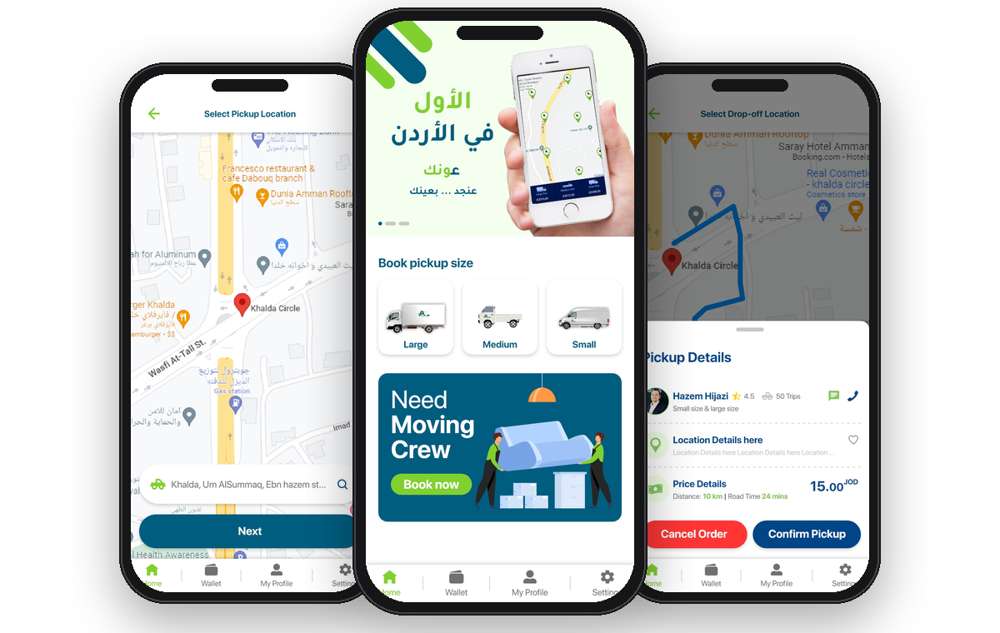

Product designer and UI/UX lead. I turn complex government, fintech and enterprise workflows into clear, scalable products.
15+ years in design, the last seven in product UI/UX: first for five companies in one business group, then for government and fintech products in Saudi Arabia and Jordan, at Ejada, Synechron and Deloitte. I lead small design teams, design end-to-end flows, and build the design systems that keep many products consistent in Arabic and English.
- Product & UX design
- Design systems & tokens
- Arabic & English (RTL) interfaces
- AI-assisted design & prototyping
- Team leadership & stakeholder alignment

Selected work
Giving a gov-tech company's products one fingerprint
For one Saudi client I led two things: the design of four products for a transport authority, and a design system to unify the client's fragmented products. We tested the system on the transport products, and it proved very efficient.
One design system, any brand
Change a few settings and the same components become a different brand, in dark mode, in Arabic. I built it alone, with a Figma AI agent doing the production work.
LUSTER: one token layer, three brands
A course project built by a team of seven. It's where I learned the token architecture I later used on my own. My part: planning and mind-mapping tokens so every component followed one naming structure.

AOUNAK: booking a truck to move furniture, in five steps
A startup I co-founded and designed from the first interview to the final screen. We never launched, and the case study explains why.

How I got here
I learned design at a printing press while I was still at university. The owner caught me sketching and offered me two hours a day to train as a graphic designer. I took it.
After graduating in computer graphics and animation from Princess Sumaya University for Technology in 2011, I worked as a 3D animator, ran on-air graphics at Roya TV, designed websites for years, and became an art director.
In 2019 I became art director for a business group, leading a team of 3 designers across five of its companies (Tamweelna, RASSCO, Funrides, Seniors IT and Kwick Box): websites and mobile app screens, brand identities, presentations, motion graphics and voiceover, and social media with the marketing team. That is where my product work started. In 2022 a UX bootcamp gave me the research method to go with it.
Since then I've designed the Al Rajhi Capital super app at Ejada, led a design system team at Synechron in Riyadh, and built design systems and design direction at Deloitte.
What I'm good at: design systems that developers can build from directly, Arabic and RTL handled properly from the start rather than mirrored at the end, and careful, clean UI.
What I'm getting better at: research. Most of my client projects didn't include user testing, so I make room for it wherever I can, like I did on AOUNAK.
- UI/UX Delivery ManagerDeloitteNov 2025 – Present
- UI/UX LeadSynechron, RiyadhJun 2024 – Nov 2025
- Senior UI/UX DesignerEjada SystemsOct 2022 – Jun 2024
- Art DirectorSmart Business Network2019 – 2022
- Web, graphic and 3D designerVibrant Soft, Eskadenia, Roya TV2011 – 2019
- B.A. Computer Graphics and AnimationPrincess Sumaya University for Technology2011
- Full resume (PDF) →
- Portfolio deck (PDF) →
Say hello
I'm open to UI/UX lead and design system roles, on-site, hybrid or remote, and I'm happy to relocate. If you're building a product in more than one language or for more than one brand, I'd love to hear about it.